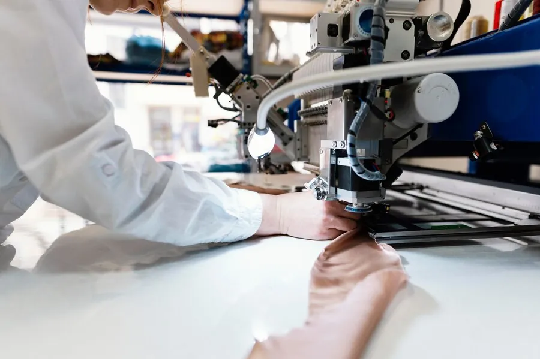

Heavy Roll Handling
Handles rolls up to 500 kg with ease. Eliminates the risk of operator injury from manual lifting and reduces the need for multiple workers per roll change.
Eliminate manual roll handling from your cutting room. Automated loading systems position fabric accurately on the spreader or cutting table — faster, safer and with consistent tension control.
Designed for textile and apparel manufacturers who need to move heavy fabric rolls from storage to cutting table without manual lifting.

Load fabric rolls from storage racks or pallet positions directly onto the spreader or cutting table. Adjustable cradle accommodates various roll diameters and fabric widths.
Consistent fabric tension throughout the loading cycle prevents distortion, wrinkles and misalignment. Programmable speed and tension settings for different material types.
Connects directly with Audaces, CSM and other automatic cutting and spreading equipment. Synchronizes with your existing cutting room workflow for uninterrupted production.
Handles rolls up to 500 kg with ease. Eliminates the risk of operator injury from manual lifting and reduces the need for multiple workers per roll change.
Works with tubular and open-width fabrics across a range of widths and diameters. Quick-change adapters for different roll core sizes.
Recipe-based operation stores fabric type, width and tension settings. Operators select the recipe and the system configures itself — reducing setup time and human error.
Measurable improvements in throughput, quality and workplace safety.
Automated loading reduces roll change time by up to 70% compared to manual handling. Less downtime between cuts means higher daily throughput.
Controlled tension and gentle handling prevent stretching, creasing and contamination. First-quality yield improves from the first layer to the last.
Eliminates manual lifting of heavy rolls — one of the leading causes of workplace injuries in textile factories. One operator can manage what previously required two or three.
Share your fabric types, roll sizes and daily throughput. Cuttech will recommend the right loader configuration for your cutting room.